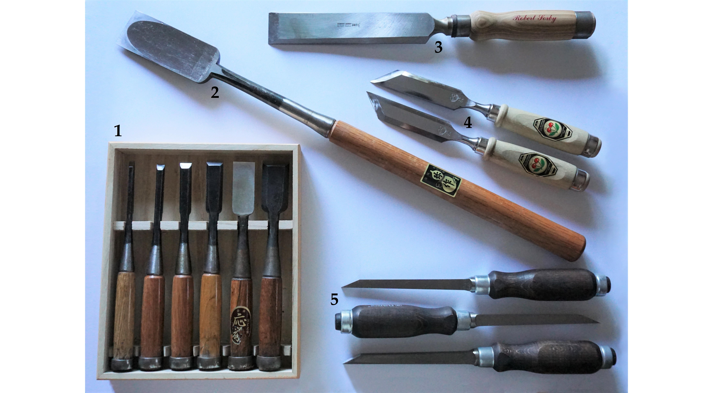
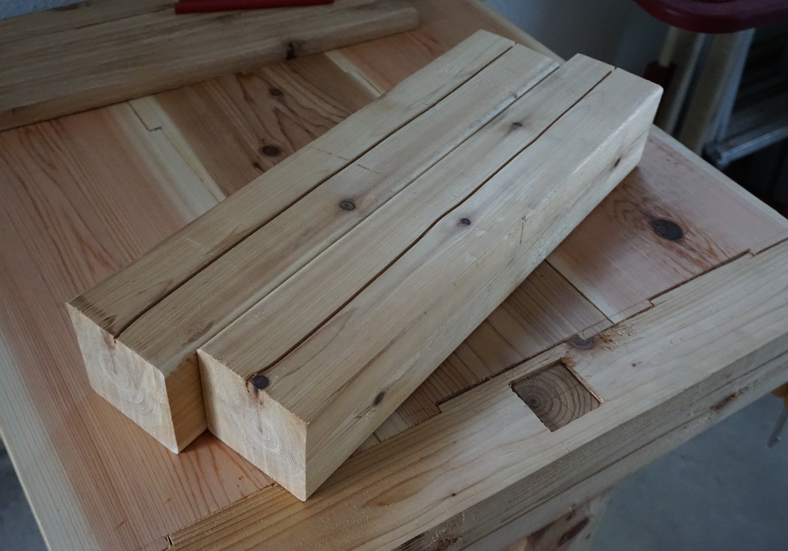
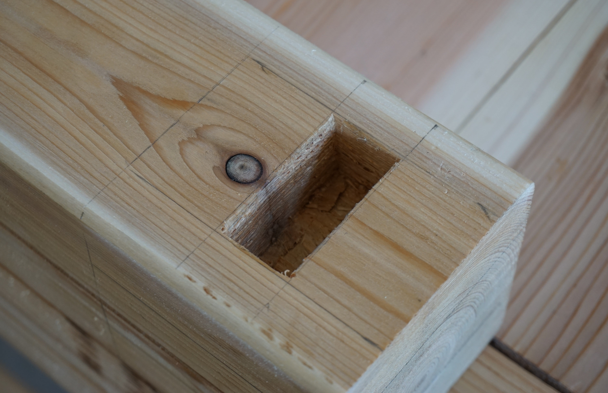
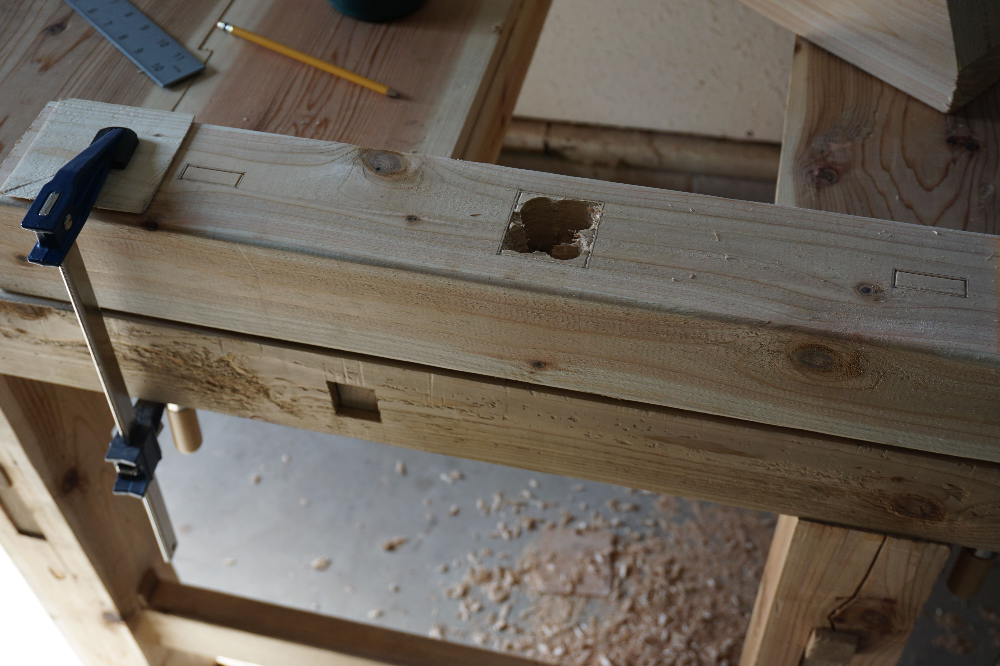
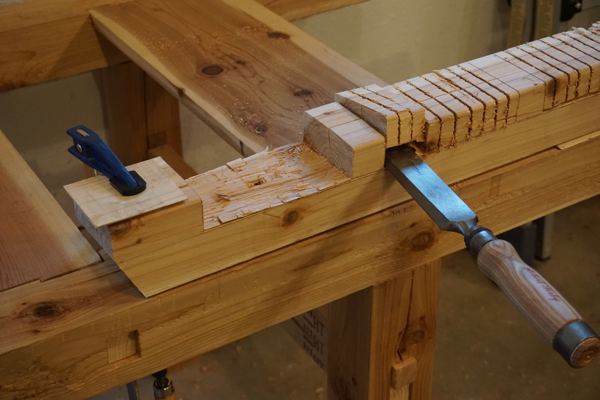
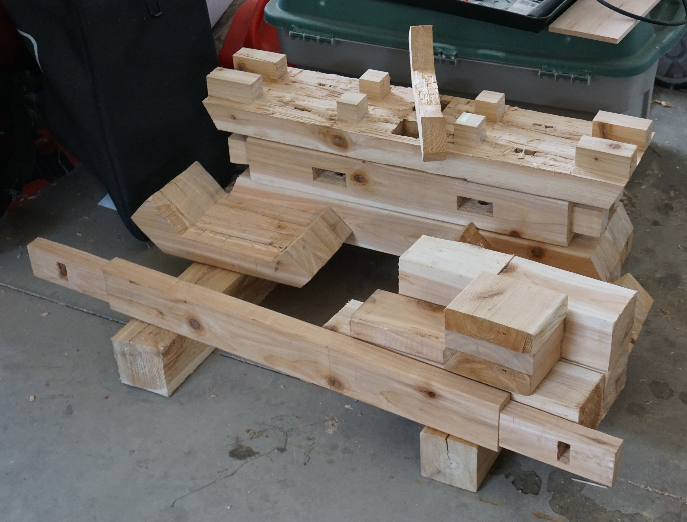
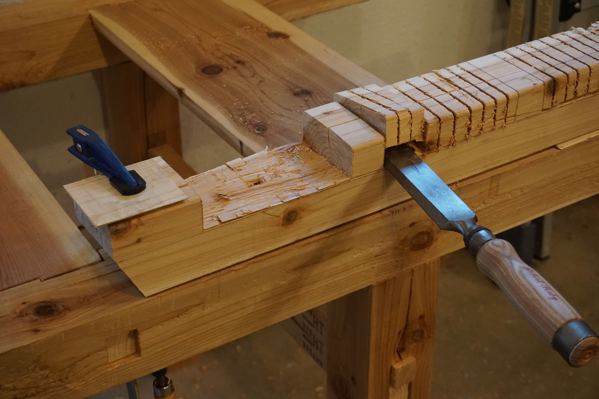
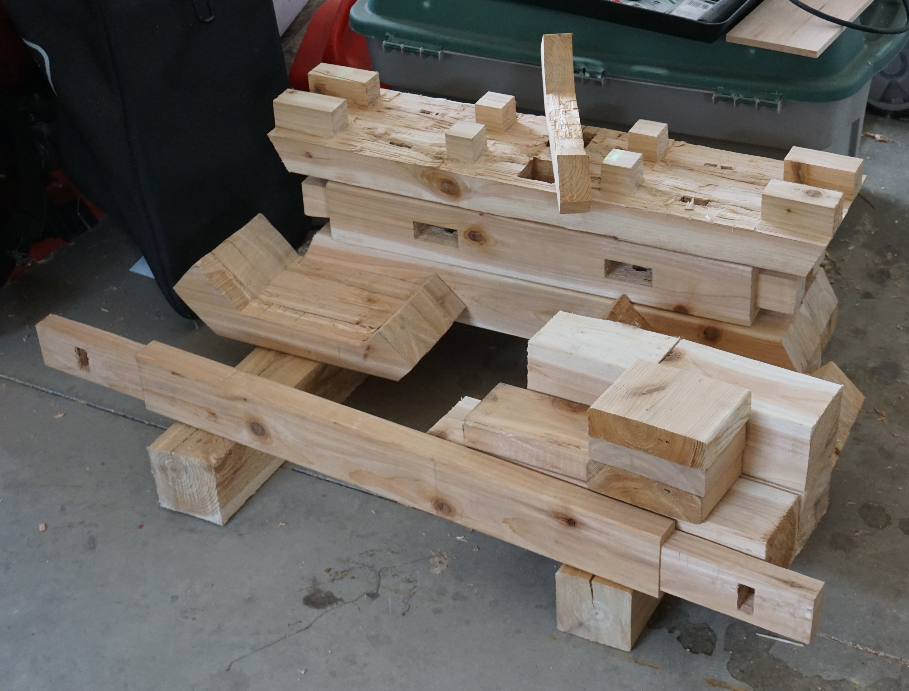

Throughout the summer of 2020, I carried out an independent project funded by a Martin A. Dale Award⁺. It involved design and handicraft, and it smelled strongly of red cedar. I took plenty of pictures and wrote a bit about it below:
The primary aim of my project was to gain the skills and knowledge required to timber frame competently. If you're unfamiliar with timber framing⁺ , it's a method of creating load-bearing structures out of wood which originated separately in East Asia and Western Europe thousands of years ago. It's not log cabin construction, nor is it stick framing; this simplified table of wood construction should help:
| Timber Framing | Log Cabin Const. | Stick Framing | |
|---|---|---|---|
| Members | full timbers, squared-off | full timbers | dimensional lumber |
| Connections | mortise-and-tenon; pegs | notches | nails; screws; glue |
| Structural System | post-and-lintel; truss | wall | wall; truss |
Stick framing is the prevalent method of the modern domestic construction industry. It's quick, cheap, and easy. It's also boring and comparatively fragile. Log cabins are cool, but they're limited in terms of design. Enter timber framing: it takes longer, costs more (unless on-site timber is used), and requires greater skill. However, the final product is nothing less than robust structural sculpture.
You might have seen timber framing before in gables or porch coverings appended to the newest Craftsman-style homes, which I think is a bit sad, but at least it looks nice. To appreciate the most traditional timber framed structures, you'd have to visit Japan, Britain, Germany, etc. In the U.S., the "really good stuff" can be found in older barns as well as in some newer barns, bridges, and homes designed by a small number of contemporary timber frame firms.
Originally, my project was divided into five weeks of timber frame joinery workshops across the country and three or more weeks of renting out woodshops to further practice my skills and apply them in making small pieces. The pandemic ruled this plan out. My revised plan was to spend two weeks taking online workshops, one week practicing my skills and using other resources to learn further, and five or more weeks building timber framed furniture. All of this, of course, at home.
There are few online timber framing workshops out there and ever fewer of high quality. I mainly used a prerecorded course offered by the Shelter Institute in Maine. I also learned from videos by Hisao Zen, a teacher of Japanese joinery. I used a broad variety of YouTube channels to further understand the techniques. Other than that, I referred to four excellent books on timber framing and Japanese joinery, pictured below.
I chose to build furniture for a few reasons. Firstly, I didn't have the space for a proper building or other larger structure. Secondly, working at a smaller scale would make errors of all kinds less consequential. And thirdly, furniture would allow me to better experiment with different styles or configurations.
Throughout my project, I sought a compromise between productivity and depth. In terms of materials, maximizing productivity would mean buying pre-planed and -cut lumber; maximizing depth would mean chopping down trees for lumber myself. In general, I decided to buy rough-sawn lumber so that I could gain planing and cutting experience without taking the much greater amount of time required to learn felling, debarking, and adzing. I do intend to learn these skills now that my Dale project is officially complete, being involved enough to constitute a project in their own right. I will need to buy more tools, which does not disappoint me.
Regarding finishing, I decided not to use the stains or varnishes typical of woodworking. Most of these contain toxic chemicals and they also hide the natural appearance and texture of the wood. I sought to expose the wood while still protecting it. There are a number of ways to do this; I chose to apply pure mineral oil, then a blend of mineral oil, beeswax, and carnauba wax, both of which are food safe. Unnecessary, but preferable.
In the spirit of traditional timber framing, I used only simple hand tools for my project. Compared to using power tools, metal fasteners, and glue, my decision to use hand tools and joinery meant that each piece of furniture would take probably five times as long and involve a lot more physical effort. This may not seem worthwhile, but it made me much happier.
Marking Tools
Saws
I used Japanese pull saws rather than Western-style saws. The latter cut on the push stroke and provide greater power, while the former cut on the pull stroke and provide greater precision.
Planing and Carving Tools
I used Japanese kanna and a few additional tools. Compared to Western-style planes, which are pushed, kanna are pulled and provide greater control.
Chisels
I used both Japanese chisels and Western-style chisels for the project. Japanese chisels are wider, flatter, and lighter while Western chisels are narrower, thicker, and heavier. This makes the former better suited to softwoods and the latter better suited to hardwoods. Japanese chisels are also forged from a harder steel and laminated with an iron layer to temper the striking force and prevent chipping of the chisel edge.
Other Tools
Besides the tools contained in the categories above, I also used the assorted but equally important tools pictured below.
Sharpening Systems
For sharpening my drawknife, kanna blades, chip breakers, and chisels, I used different systems in combination. Learning how to sharpen my tools well was one of the most valuable skills I developed throughout my project. That being said, there are degrees of sharpness that can be achieved with any of the tools I used and I still have much to improve upon.
The first piece of furniture I built was a worktable. This made building my later pieces much easier. I also knew that my first piece would not be the most polished and a rough worktable would be just fine.
As with all of my pieces, I first made a model and an explosion in Autodesk Inventor in order to visualize my design and confirm dimensions as I cut everything out. For this piece in particular, I also carried out some statics calculations to predict the failure mode and load at failure. These calculations include critical assumptions, including fixed joints between all members, and as such are limited. However, if you're interested in them, you can find them here⁺.
I used wedged half-dovetail joints or sage-kama to connect the stretchers to the legs. To splice the tabletop boards together, I used an alternating variation of the shiplap joint. In my model, I connected the tabletop to the frame with dovetailed lap joints or koshikake-ari-tsugi, but when actually constructing the worktable I dropped the dovetails—the tabletop would not be subject to significant tension forces.
I used western red cedar except for the stretchers, which are made of white pine. Western red cedar is one of my favorite woods to work because it has a beautiful appearance, it is soft, it is naturally insect- and rot-resistant, and it smells great. However, I would advise against inhaling too much of its aroma; see this⁺ occupational hazard named after the species. It is also laden with knots.
The first step was to cut the members to length.
I then planed them. Wood shavings are beautiful.
My first tenons—those at either end of the stretchers—where imperfect, but they were good enough.
The same goes for my first mortises. They look great from afar and are sized well, but closer inspection reveals a bit of roughness.
While the cracks running along a couple of the legs may appear worrisome, their structural effect is, in this case, negligible. Actually, I'm a fan of the look; it's more honest.
All eight wedges. Getting these to be roughly the same dimensions involved a decent amount of chiseling and comparing.

The finished worktable! The configuration of the tabletop is slightly different than is depicted in the model. The spaces without boards make through-cutting lumber easier.
My second piece was a coffee table. This time I used a combination of western red cedar and douglas fir/larch and a sheet of tempered glass to complete the tabletop. I used open slot mortises or sammai-gumi to connect the outer top frame; however, in order to attach the legs, I cut an additional through-mortise in each one of these joints. The inner diamond frame is connected at the ends with lap joints which are housed in side-mortises.
 
After roughly completing the short ends of the outer frame, my kanna blades and chip breaker were due for a good sharpening. This took most of the day.
I oftentimes used scrap wood pieces as sawing jigs.
Beginning assembly.
The picture below only begins to demonstrate the difficulty of fitting the frames together squarely. I think I cut the joints too tightly at first... Getting the leg tenons through each of the through-mortises in the frame was a real challenge.

I did a final planing of the frame-top after assembly.
The finished coffee table without glass!
The finished coffee table with glass!
After the coffee table, I made a smaller, non-furniture piece. It was a portable holder for my sharpening stones, which would not only enable me to sharpen above a tub of water but also provide more stability during sharpening. Beyond that, the point of creating this piece was to try a more complex joint and to work with hardwood rather than softwood. In particular, the piece uses the mortised rabbeted oblique scarf joint, or kanawa-tsugi, and is made out of red oak.
I also made a couple of jigs to accommodate different sizes of sharpening stones.
My fourth and final piece was a desk or table. For this, I sought to incorporate two special timber frame techniques: the pegged brace and the tusked tenon. This piece exclusively used western red cedar.

I used my brace and bit to create the peg mortises as well as to roughly clear out the other leg mortises.
The oldest trick in the book: using a mirror to ensure that drilling remains vertical.
 



All of the desk parts before assembly.
The pegs needed only to be roughly cut out. They are about 7/8" in diameter.
I only got this far with the desk. It turned out that I made the strecher a couple inches too long, so the tabletop boards wouldn't fit. This would have been an easy fix; unfortunately, I would be leaving home the next day and had to finish packing, so it didn't happen.
Over the course of my Dale project, I developed a much greater understanding of, and appreciation for, the work of timber framers. My cutting of joints improved greatly with each piece constructed but I feel that this marks only the beginning of my development as a timber frame craftsman. This ten-week base of knowledge and practice will, I think, serve to orient a much longer process of learning. In the decades to come, I hope to continue improving and refining the techniques of this wonderful craft. Finally, I would like to thank the Dale Family, whose great generosity enabled this transformative project in the first place.